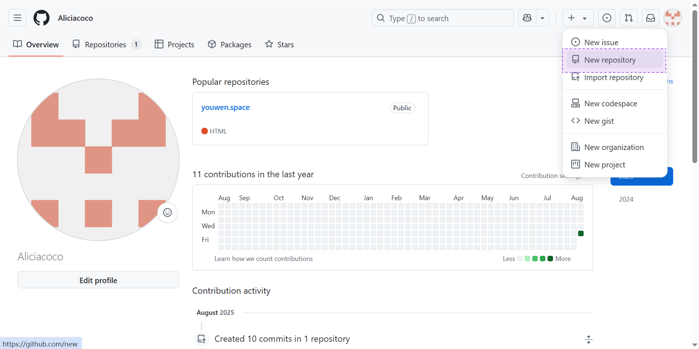

如何购买域名并部署Vercel
新手预计耗时1h30min
一、准备工作
1. 注册 GitHub 账号
GitHub 用来存放和管理你的网站代码
https://github.com/
2. 注册 Vercel 账号（可用 GitHub 登录）
Vercel 负责自动部署并提供访问入口
https://vercel.com/
3. 购买域名并实名认证
阿里云 提供你绑定网站的自定义域名
https://wanwang.aliyun.com/
二、操作步骤
1. 在 Github 中新建仓库
在 GitHub 里，Repository（仓库）就是一个带版本控制的代码存储空间，就像一个装满代码和历史记录的智能文件柜。

2. 在仓库中上传 index.html 文件（可本地上传或在线编写）
index.html 是网站的“门面文件”，服务器会默认把它作为首页加载，让用户访问域名时不必输入具体文件名
3. 在 Vercel 中新建项目、关联Git仓库并部署
Vercel 是一个帮你自动部署到它自己云服务器的托管平台，会自动拉取最新代码并生成可访问的网站
4. 按 Vercel 提示在域名注册商处添加 DNS 记录
想用自定义域名就需要添加 DNS 记录
5. 访问域名成功✅